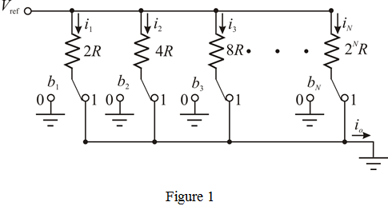
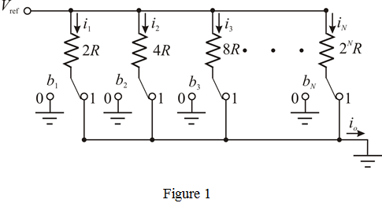

(a)
Refer to circuit of an  bit digital-to-analog converter (DAC) in Figure P1.37 in the textbook.
bit digital-to-analog converter (DAC) in Figure P1.37 in the textbook.
When switch position at 1, the circuit is shown in Figure 1.

(a)
Refer to circuit of an bit digital-to-analog converter (DAC) in Figure P1.37 in the textbook.
When switch position at 1, the circuit is shown in Figure 1.

Apply Kirchhoff’s current law at node .
Therefore, the output current is,
.
(b)
Write the output current expression.
From the output current expression, the least significant bit (LSB) is .
Therefore, the least significant bit (LSB), is .
From the output current expression, the most significant bit (MSB) is .
Therefore, the most significant bit (MSB), is .
(c)
Calculate the maximum value of output current.
Therefore, the maximum value of output current, is .
If the least significant bit (LSB) is changing from 0 to 1.
Calculate the change in output current.
Therefore, the change in output current, resulting from the LSB changing from 0 to 1 is .